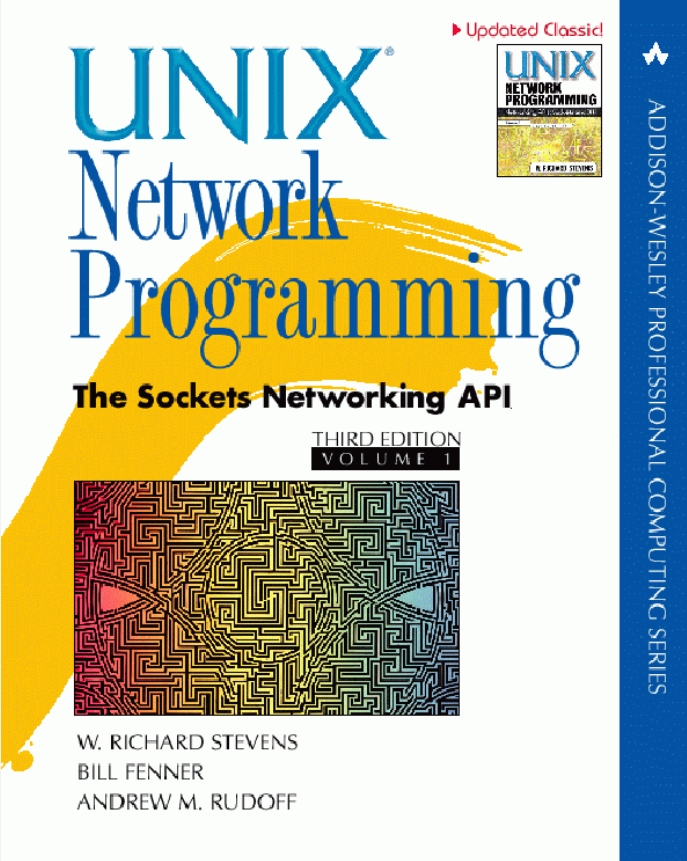

My Library
This is collection of book I have read or I wants to read.
UNIX Network Programming, Volume 1 The Sockets Networking API, 3rd Edition by W. Richard Stevens, Bill Fenner, Andrew M. Rudoff

I have read some chapters mostly related to TCP. I really like how they explained the topic. Following the book along with coding what explained in the book and executing it will help you learn faster.
Why you should read this? : To learn about practical networking
Computer Networking: A Top Down Approach by James F. Kurose and Keith W. Ross
Why you should read this? : To learn about basic computer networking
C++ Concurrency in action by Anthony Williams
Why you should read this? : To learn about thread, concurrency, data sharing among threads in C++
Code Complete 2 by Steve McConnell

Why you should read this? Now you how to code but still you have to learn how to structure code to achieve maintainable and modular codebase.
Sql queries for mere mortals: A Hands-On Guide to Data Manipulation in SQL by John L. Viescas
Why you should read this? To learn how to query data from database. It's a must skill for a software developer.
ABOUT FACE by Alan Cooper, Robert Reimann, David Cronin, Chris Noessel

Heard a lot of this book, Just curious to know what all fuzz is about.
The Mythical Man-Month by Frederick P. Brooks JR.

Heard a lot of this book, Just curious to know what all fuzz is about.
The hobbit and The lord of ring by J.R.R. Tolkien

Next time when you want to have a good time, do youself a favour and watch this six movie marathon in this order.
Millennium series by Stieg Larsson
I have all these three books written by stieg Larsson in 2018. I liked the suspense and thriller. The series get better and better. Even there are movies based on the books.